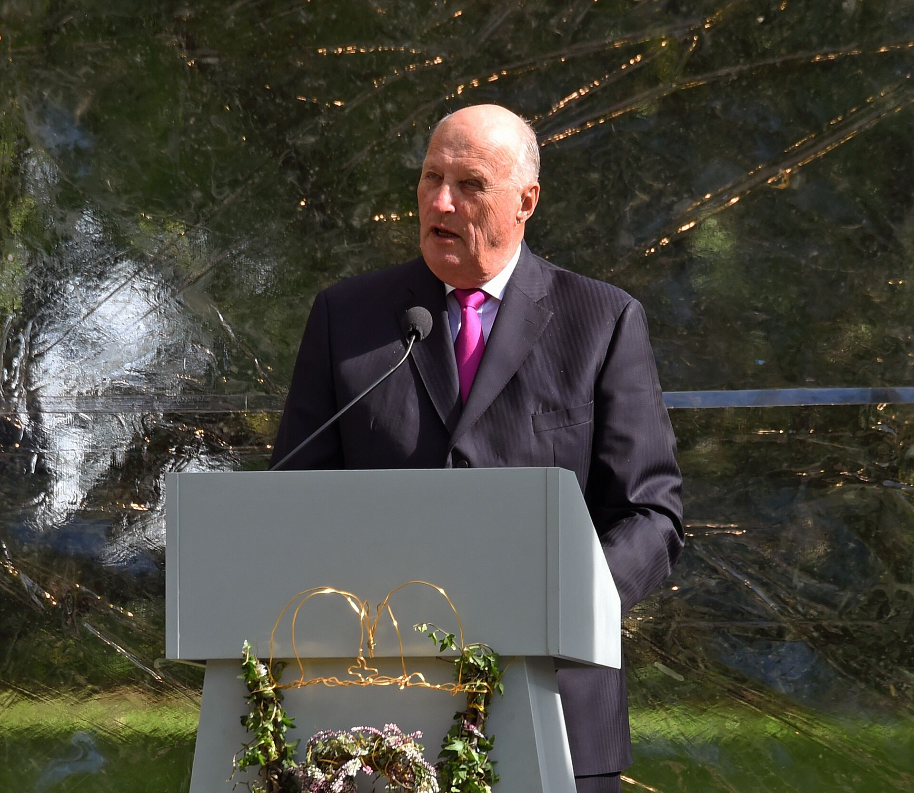
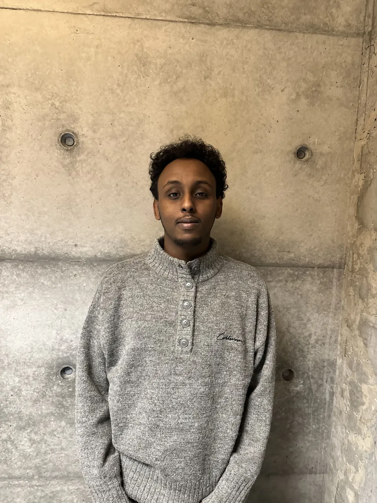
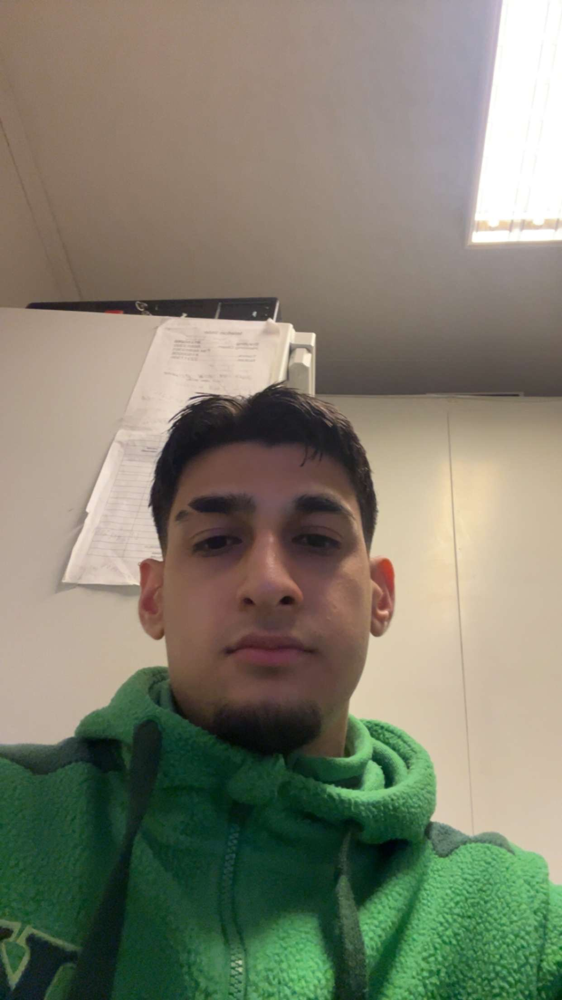

Hvilken betydning har kong Haralds ord og handlinger hatt for følelsen av tilhørighet
blant mennesker med minoritetsbakgrunn i Norge?
Tekst: [Navn]Foto: [Navn][Dato]Lesetid
Foto: [Fotograf / NTB]
01 · Åpning
«Nordmenn er jenter som er glad i jenter, gutter som er glad i gutter, og jenter og gutter som er glad i hverandre.»
Talen handlet ikke bare om toleranse, men om hvem som får være en del av det norske fellesskapet.
Kongen beskrev et samfunn der mennesker med ulik bakgrunn ikke står utenfor nasjonen, men er en del av den.
Ti år senere er spørsmålet fortsatt aktuelt: Er Norge blitt det inkluderende samfunnet kongen beskrev,
eller finnes det fortsatt et gap mellom idealene og virkeligheten? [Resten av avsnittet ditt]
02 · BakgrunnNorge i tall
Et Norge i endring
[Avsnitt 1 – bakgrunn: kongens rolle og et Norge i endring.]
[Avsnitt 2 – hva kongen har sagt og gjort om mangfold og tilhørighet, med kilde.]
Kong Haralds tale fra 2016 fikk raskt stor oppmerksomhet. Det som ble sagt under hagefesten i Slottsparken, spredte seg videre gjennom nyhetsmedier og sosiale medier.
Allerede dagen etter skrev VG om hvordan talen ble hyllet på sosiale medier. Mange reagerte positivt på at kongen snakket åpent om mangfold, religion og kjærlighet.
Også mennesker med minoritetsbakgrunn uttrykte begeistring. For mange handlet budskapet om noe større enn selve talen: å bli anerkjent som en naturlig del av Norge.
Fra Slottsparken til resten av verden
Oppmerksomheten stoppet ikke ved Norges grenser. Den 6. september 2016 skrev Dagbladet om hvordan kong Haralds ord ble hyllet internasjonalt.
Talen vakte interesse fordi den utfordret tradisjonelle forestillinger om nasjonal identitet. I stedet for å definere nordmenn ut fra opprinnelse eller bakgrunn, la kongen vekt på mangfoldet i samfunnet.
Hvem får definere det å være norsk?
Kongens budskap åpnet for en bredere forståelse av norsk identitet. Å være norsk handlet ikke nødvendigvis om hvor foreldrene dine kommer fra, hvilken religion du tilhører, eller hvem du elsker.
Men selv om talen ble møtt med begeistring, reiste den også et viktig spørsmål: Er det nok at kongen sier at alle hører til, dersom noen fortsatt opplever å bli behandlet som fremmede i sitt eget land?
Dette spørsmålet danner utgangspunktet for møtet med tre unge mennesker med minoritetsbakgrunn i neste kapittel.
Kong Haralds tale fikk stor oppmerksomhet både i Norge og internasjonalt. Allerede dagen etter skrev VG om hvordan talen ble hyllet i sosiale medier. Mange satte pris på at kongen løftet frem mangfold, kjærlighet og religion som en naturlig del av det norske samfunnet.
Også utenlandske medier la merke til budskapet. Den 6. september 2016 skrev Dagbladet om hvordan talen ble hyllet verden over. Kongens ord ble sett på som et uttrykk for et åpent og inkluderende Norge.
Samtidig var ikke alle enige om at talen beskrev virkeligheten. Den skapte også rom for diskusjon om forskjellen mellom et inkluderende ideal og hvordan mennesker faktisk blir behandlet i samfunnet.
Gjennom talen utfordret kong Harald forestillingen om at norsk identitet handler om hudfarge, religion eller familiebakgrunn. Han beskrev et Norge der mennesker med forskjellige historier og tradisjoner kan høre til i det samme fellesskapet.
Budskapet var at man ikke trenger å gi opp sin kulturelle bakgrunn for å være norsk. Man kan ha røtter i et annet land, praktisere en annen religion eller leve annerledes enn flertallet, og fortsatt være en del av Norge.
Men selv om kongens ord formidlet et ideal om fellesskap, er det ikke sikkert at alle opplever denne tilhørigheten i hverdagen. Nettopp dette spørsmålet står sentralt når vi møter mennesker med minoritetsbakgrunn i neste kapittel.

Slottsparken · 1. september 2016
«Det vi kaller hjem,
er der hjertet vårt er –
og det kan ikke alltid plasseres innenfor landegrenser.»
— Kong Harald V
Foto: [Fotograf / NTB]
04 · Personlige erfaringer
[Mellomtittel]

Foto: [Fotograf]
[Abdi, Gulam]
Abdi Gulam er født og oppvokst i Norge med foreldre fra Somalia. Hele livet har Norge vært hjemmet hans, men han har likevel opplevd at andre stiller spørsmål ved hvor han egentlig kommer fra.
– Jeg har alltid sett på meg selv som norsk. Jeg har vokst opp her, gått på norsk skole og snakker norsk. Likevel får jeg ofte spørsmål om hvor jeg egentlig kommer fra, forteller Abdi.
Da kong Harald holdt sin tale i 2016, beskrev han et Norge der mennesker med ulik bakgrunn, religion og kultur er en naturlig del av fellesskapet.
For Abdi betyr kongens budskap mye.
– Jeg synes det var sterkt å høre kongen si at vi alle er en del av Norge. Det viser at det ikke spiller noen rolle hvilken hudfarge du har eller hvor foreldrene dine kommer fra.
Samtidig mener han at det fortsatt er en forskjell mellom kongens ord og virkeligheten mange opplever.
– Talen var viktig, men det hjelper ikke bare å si at alle er norske. Vi må også føle oss akseptert i hverdagen.
For Abdi handler det å være norsk ikke om utseende eller etternavn, men om hvor man føler seg hjemme.
– Norge er hjemmet mitt. Jeg burde ikke måtte bevise at jeg hører til her.
[Hva tenker person 1 om kongen og talen?]
«[Ordrett sitat fra person 1]»
— [Navn, alder]
Foto: [Fotograf]
[Sara Ahmed, 22]
[Fine ord er ikke alltid nok]
Sara Ahmed er født og oppvokst i Norge med foreldre fra Pakistan. Hun føler seg norsk, men mener at mennesker med minoritetsbakgrunn fortsatt møter fordommer og utfordringer i samfunnet.
Jeg synes kong Haralds tale var veldig fin, og budskapet hans var viktig. Men det er forskjell på å si at alle hører til, og å faktisk få alle til å føle det slik, forteller Sara.
Hun mener at mange unge med minoritetsbakgrunn fortsatt opplever å bli vurdert ut fra navn, utseende eller religion.
Selv om vi er født og oppvokst her, kan vi fortsatt bli sett på som annerledes. Det kan føles som om vi hele tiden må bevise at vi er norske nok.
For Sara handler ekte inkludering om hvordan mennesker blir behandlet i hverdagen, ikke bare om hva som blir sagt i offentlige taler.
Kongen kan si at Norge er for alle, men det er samfunnet som må vise det gjennom handling. Alle fortjener å føle seg hjemme i landet de har vokst opp i.

Foto: [Fotograf]
[Abdullah, 24]
Abdullah Ahmad er født og oppvokst i Norge med foreldre fra Pakistan. Han har vokst opp med både norske og pakistanske tradisjoner, og mener at det å ha flere kulturelle tilhørigheter er en styrke.
Jeg føler meg både norsk og pakistansk. Norge er landet jeg har vokst opp i, men den pakistanske kulturen er også en viktig del av hvem jeg er. Jeg synes ikke man skal måtte velge mellom de to, forteller Abdullah.
Han kjenner seg igjen i kong Haralds budskap fra 2016, der kongen beskrev et Norge med plass til mennesker med ulik bakgrunn, religion og kultur.
Det jeg likte med talen, var at kongen viste at det ikke finnes én bestemt måte å være norsk på. Vi kan ha forskjellige tradisjoner og religioner, men fortsatt høre til i det samme fellesskapet.
Abdullah håper at fremtidige generasjoner slipper å føle at de må velge mellom sin norske identitet og familiens kulturelle bakgrunn.
For meg handler tilhørighet om å kunne være seg selv uten å måtte forklare eller forsvare hvem man er. Jeg er stolt av begge kulturene mine, og begge er en del av meg.
[Erfaringene til person 3, med sitater.]
05 · Refleksjon
En tale, tre ulike perspektiver
Ti år etter kong Haralds tale om mangfold og fellesskap er budskapet fortsatt aktuelt. Abdi Gulam, Sara Ahmed og Abdullah Ahmad har ulike erfaringer med det å være norsk, men de deler et ønske om å bli akseptert for den de er.
For Abdi handler talen om anerkjennelse. Han mener kongens ord viser at mennesker med minoritetsbakgrunn også er en naturlig del av Norge.
Sara har et mer kritisk perspektiv. Hun setter pris på budskapet, men mener at fine ord ikke er nok dersom mennesker fortsatt opplever diskriminering og utenforskap.
Abdullah trekker frem betydningen av å kunne tilhøre flere kulturer samtidig. Han mener at norsk identitet ikke trenger å stå i motsetning til familiens kulturelle bakgrunn.
Selv om de har ulike synspunkter, er de enige om én ting: Tilhørighet handler ikke bare om hvor man kommer fra, men også om hvordan man blir møtt av samfunnet.
Ordene betyr noe
«Jeg synes det var sterkt å høre kongen si at vi alle er en del av Norge. Det viser at det ikke spiller noen rolle hvilken hudfarge du har eller hvor foreldrene dine kommer fra.»
— [Abdi Gulam]
Ord er ikke nok
«[Kongen kan si at Norge er for alle, men det er samfunnet som må vise det gjennom handling. Alle fortjener å føle seg hjemme i landet de har vokst opp i.]»
— [Sara Ahmed]
[Kongens betydning for fellesskapet]
«[Kong Haralds tale fra 2016 fikk stor oppmerksomhet fordi han beskrev et Norge der mennesker med ulik bakgrunn, religion og identitet hører til i det samme fellesskapet.
Johan L. Tønnesson, professor emeritus i sakprosa ved Universitetet i Oslo, har tidligere analysert kongens tale og dens betydning. Talen kan forstås som et eksempel på hvordan et statsoverhode bruker språket til å formidle verdier om nasjonal identitet og fellesskap.
Kongen hadde en samlende og symbolsk rolle. Når han beskrev mangfold som en naturlig del av Norge, bidro han til å utfordre en snever forståelse av hvem som kan kalles norsk.
Samtidig viser de ulike perspektivene i denne reportasjen at symbolsk inkludering ikke nødvendigvis betyr at alle opplever likeverd i hverdagen.]»
«Johan L. Tønnesson, professor i sakprosa, Universitetet i Oslo»
[Bildetekst]Foto: [Fotograf]
06 · Avslutning
[Knytt tilbake til åpningen og sitatet. Avslutt med et sitat eller en tanke.]
Kilder
Det kongelige hoff (2016).
Hagefest i Slottsparken: Velkomsttale.
Les originaltalen
. Hentet 23.11.2026.
Det kongelige hoff (2016).
Hagefest hos Kongeparet.
Les om hagefesten
. Hentet 23.11.2026.
Statistisk sentralbyrå (2026).
Innvandrere og norskfødte med innvandrerforeldre.
Se statistikken
. Hentet 23.11.2026.
Rønold, Irene (2016).
Kongens tale hylles i sosiale medier. VG, 2. september.
Les artikkelen
. Hentet 23.11.2026.
Ytterstad, Matias (2016).
Kong Harald hylles over hele verden etter den
følelsesladde talen. Dagbladet, 6. september.
Les artikkelen
. Hentet 23.11.2026.
Johnsen, Herman Arneberg (2026).
Ekspert analyserte Kong Haralds ikoniske tale:
– Den var nokså radikal.
ABC Nyheter, 1. september.
Les ekspertanalysen
. Hentet 23.11.2026.
Intervjuer
Egne intervjuer føres opp her etter gjennomføring,
med navn, dato og intervjumetode.
Bildekilder
Fotograf, originalkilde og bildelisens oppgis
for hvert bilde som brukes i reportasjen.
Om saken
Reportasjen er utarbeidet som en eksamensoppgave
i Kommunikasjonsdesign ved Høgskolen i Østfold.
Den bygger på kong Haralds tale fra 2016,
offentlig statistikk fra Statistisk sentralbyrå
og publiserte nyhetsartikler.
Ekspertuttalelser fra Johan L. Tønnesson
er hentet fra ABC Nyheter og er ikke et
egenprodusert intervju.


![Portrett av [navn]](../assets/img/jobb bilde1 .jpg)
![[Beskriv bildet]](../assets/img/FELLESSKAP.jpg)